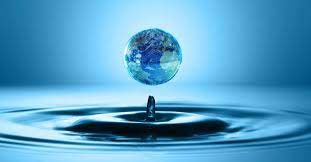

PROYECTO AULA 2IM10
PoliAgua.11: Una Propuesta De Campaña Para Consumo de Agua Natural
MENÚ PRINCIPAL:
Consumo del agua
Consecuencias del consumo del agua
¿Qué es el consumo excesivo de agua?
Distribución de Agua en la Época Colonial en México
